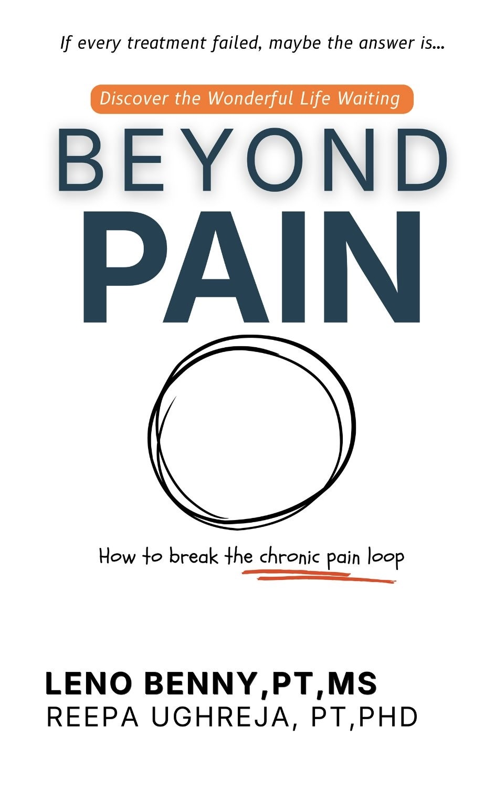

1
Pain
A painful experience creates a powerful warning signal.
Beyond Pain explains chronic pain in clear, human language and helps readers understand why pain can persist, why fear can make life smaller, and how gradual movement and confidence can help change the story.
Paperback & Kindle · Written to be practical, clear, and easy to understand
Chronic pain can affect movement, sleep, confidence, emotions, and daily decisions. Understanding the cycle can make it feel less mysterious.
A painful experience creates a powerful warning signal.
Movement starts to feel dangerous, even when damage is not increasing.
Activity shrinks, confidence drops, and the body becomes less prepared.
The nervous system may become more protective, keeping the cycle going.
The goal is not to dismiss pain. It is to understand it well enough that fear, uncertainty, and avoidance stop controlling every decision.
Learn why pain and tissue damage are related, but not always the same thing.
See how worry, avoidance, deconditioning, and sensitivity can reinforce one another.
Learn why gradual exposure and meaningful activity can help rebuild confidence.
Understand how sleep, stress, attention, beliefs, and lifestyle can influence pain.
Replace “What is wrong with me?” with questions that support recovery and action.
Shift from constant protection toward informed, gradual, confident participation in life.
“The goal is not to prove that your pain is imaginary. The goal is to understand pain well enough that it no longer owns every decision you make.”
— From the central idea behind Beyond Pain
Leno Benny, PT, created Beyond Pain to make modern pain education easier to understand for everyday readers.
The book brings together rehabilitation principles, pain science, movement, behavior, and the human experience of living with persistent pain—without burying the reader in medical jargon.
No. The concepts are intended to help readers understand persistent pain more broadly, not only one diagnosis or body region.
No. Pain is real. The book explains how biological, psychological, behavioral, and social factors can all influence the pain experience.
No. The book is educational and should not replace individualized diagnosis, treatment, or emergency medical care.
You can purchase Beyond Pain through Amazon using any “Get the Book” button on this page.
If persistent pain has made your world smaller, Beyond Pain can help you understand what may be happening and approach movement with a different perspective.
Get Beyond Pain on Amazon Paperback & Kindle